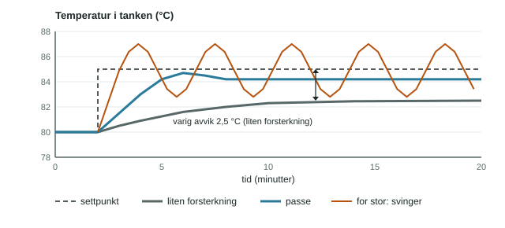

P-regulering
Hvor mye skal regulatoren åpne ventilen når det oppstår et avvik? Det enkleste svaret er: mer jo større avviket er. Det kalles P-regulering, og det er grunnlaget for nesten alle regulatorer i industrien. Her lærer du hvordan en P-regulator regner, hva forsterkning betyr, og hvorfor P-regulering alene ofte gir et avvik som aldri blir borte.
Mer avvik gir mer pådrag
Tenk deg at du regulerer temperaturen i tanken for hånd. Er det bare litt for kaldt, åpner du dampventilen litt. Er det mye for kaldt, åpner du mye. Du justerer altså i forhold til hvor stort avviket er.
En P-regulator gjør akkurat det samme. P står for proporsjonal, som betyr «i samme forhold». Pådraget endres i samme forhold som avviket: Dobbelt så stort avvik gir dobbelt så stor endring av ventilen.
Slik regner P-regulatoren
P-regulatoren regner ut pådraget med denne formelen:
\[ \text{pådrag} = \text{arbeidspunkt} + K_p \cdot \text{avvik} \]
- Avviket er settpunkt minus måleverdi, i prosent av måleområdet. Det lærte du på siden Settpunkt, måleverdi og avvik.
- Forsterkningen \( K_p \) er et tall som bestemmer hvor kraftig regulatoren reagerer. Med \( K_p = 2 \) gir 1 % avvik 2 % endring av pådraget.
- Arbeidspunktet er pådraget regulatoren gir når avviket er null, ofte 50 %. Det stilles inn slik at det passer med vanlig drift.
Pådraget kan ikke bli mindre enn 0 % (stengt) eller større enn 100 % (helt åpen). Regner regulatoren seg fram til mer, blir pådraget stående på grensen.
Oppgave: En P-regulator har forsterkning \( K_p = 2 \) og arbeidspunkt 50 %. Hva blir pådraget når avviket er a) 5 %, b) −10 % og c) 30 %?
Løsning:
- Formelen er pådrag = arbeidspunkt + \( K_p \) · avvik.
- a) \( 50\ \% + 2 \cdot 5\ \% = 60\ \% \). Det er for kaldt, så ventilen åpnes mer.
- b) \( 50\ \% + 2 \cdot (-10\ \%) = 30\ \% \). Det er for varmt, så ventilen strupes.
- c) \( 50\ \% + 2 \cdot 30\ \% = 110\ \% \). Det går ikke, så pådraget blir stående på 100 %.
Svar: a) 60 %, b) 30 % og c) 100 % (helt åpen).
![Diagram med avvik i prosent av måleområdet fra minus 50 til pluss 50 langs bunnen og pådrag fra 0 til 100 prosent oppover. Tre linjer går gjennom punktet avvik 0 og pådrag 50 prosent. Linjen for Kp lik 1 er slakest og når 0 og 100 prosent ved avvik minus og pluss 50. Linjen for Kp lik 2 er brattere og når grensene ved minus og pluss 25 prosent avvik. Linjen for Kp lik 4 er brattest og når grensene ved minus og pluss 12,5 prosent avvik. Et punkt viser at Kp lik 2 og avvik 5 prosent gir pådrag 60 prosent.](bilder/p-regulator-padrag.svg)
Proporsjonalbånd
I mange styresystemer stilles ikke forsterkningen inn direkte. I stedet stilles proporsjonalbåndet (PB). Det er hvor mye avviket må endre seg, i prosent av måleområdet, for at pådraget skal gå fra helt stengt til helt åpen:
\[ \text{PB} = \frac{100\ \%}{K_p} \]
Med \( K_p = 2 \) blir proporsjonalbåndet \( 100\ \% / 2 = 50\ \% \). I figuren ser du at linjen for \( K_p = 2 \) går fra 0 til 100 % pådrag mens avviket går fra −25 % til 25 %, altså over 50 %. Legg merke til at stor forsterkning gir et smalt (lite) proporsjonalbånd.
Avviket som ikke blir borte
P-regulering har én stor svakhet. Se på formelen igjen: Er avviket null, gir regulatoren alltid arbeidspunktet, for eksempel 50 %. Men hva om prosessen trenger 70 % damp for å holde settpunktet? Da må det være et avvik for at regulatoren skal gi mer enn 50 %. Prosessen legger seg derfor til ro med et lite avvik som aldri blir borte. Det kalles varig avvik.
Oppgave: Temperaturen i tanken skal være 80 °C. Måleområdet er 0–150 °C. P-regulatoren har \( K_p = 4 \) og arbeidspunkt 50 %. Om sommeren holder 50 % damp temperaturen på 80 °C. Om vinteren er råstoffet kaldere, og det trengs 70 % damp. Hvilken temperatur legger tanken seg på om vinteren?
Løsning:
- Pådraget må bli 70 %: \( 70\ \% = 50\ \% + 4 \cdot \text{avvik} \).
- Da må \( 4 \cdot \text{avvik} = 20\ \% \), altså avvik = 5 %.
- Måleområdet er 150 °C. 5 % av det er \( 0{,}05 \cdot 150 = 7{,}5 \) °C.
- Avviket er positivt, så måleverdien er under settpunktet: \( 80 - 7{,}5 = 72{,}5 \) °C.
Svar: Tanken legger seg på 72,5 °C om vinteren. Avviket på 7,5 °C blir ikke borte så lenge regulatoren bare er en P-regulator.
Eksemplet er forenklet: Vi regner som om det trengs 70 % damp også når temperaturen er litt lavere enn 80 °C. I virkeligheten trengs det litt mindre varme for å holde en lavere temperatur, så avviket blir noe mindre.
Liten eller stor forsterkning?
Eksemplet viser at større forsterkning gir mindre varig avvik. Med \( K_p = 8 \) i stedet for 4 ville avviket blitt halvparten så stort. Hvorfor ikke bare skru forsterkningen helt opp?
Problemet er at prosessen trenger tid på å svare. Det tar tid å varme opp væsken i tanken, og det tar tid før måleren merker endringen. En regulator med for stor forsterkning reagerer for kraftig: Den åpner mye damp, temperaturen skyter over settpunktet, regulatoren struper kraftig, temperaturen faller under, og slik fortsetter det. Prosessen begynner å svinge.

| Forsterkning | Hva som skjer |
|---|---|
| For liten | Rolig, men treg. Stort varig avvik. Forstyrrelser blir rettet opp sakte. |
| Passe | Raskt mot settpunktet, kanskje med en liten svingning før det roer seg. Lite varig avvik. |
| For stor | Prosessen svinger opp og ned rundt settpunktet. Ventilen går fram og tilbake hele tiden og slites. I verste fall blir svingningene større og større. |
Å finne riktige innstillinger kalles å tune regulatoren. Det gjøres av instrumentteknikere eller prosessingeniører når sløyfa settes i drift, og senere hvis prosessen endres.
Når holder P-regulering?
P-regulering alene brukes der et lite varig avvik ikke gjør noe. Et typisk eksempel er nivået i en buffertank, en tank som skal jevne ut strømmen mellom to deler av anlegget. Det spiller liten rolle om nivået er 50 % eller 55 %, bare tanken ikke går tom eller full. En rolig P-regulator gjør at strømmen ut av tanken endres jevnt, og det er nettopp det vi vil.
Der settpunktet må holdes nøyaktig, for eksempel temperaturen i en reaktor, er varig avvik ikke godt nok. Da trengs det mer enn P. Det lærer du om på neste side, PI- og PID-regulering.
På nattskiftet ser du i trenden at temperaturen i en tank svinger jevnt mellom 77 og 83 °C, med cirka fire minutter mellom hver topp. Settpunktet er 80 °C. Pådraget til dampventilen går fram og tilbake mellom 20 % og 90 %.
Slik tenker du:
- Jevne svingninger der både måleverdi og pådrag går opp og ned, tyder på at regulatoren reagerer for kraftig.
- Sjekk hendelsesloggen, altså listen i styresystemet over hva som har skjedd og hvem som har endret hva. Har noen endret innstillingene, eller har prosessen endret seg, for eksempel en annen produksjonsmengde?
- Svingningene kan også komme fra en ventil som henger litt og så hopper. Følg med på om ventilen beveger seg jevnt.
- Meld fra til skiftleder. En midlertidig løsning kan være å sette regulatoren i manuell med et fast pådrag, hvis prosedyren tillater det. Innstillingene i regulatoren endrer du ikke selv.
- Forsterkning og andre innstillinger i en regulator skal bare endres av dem som har ansvar og opplæring for det, og etter bedriftens prosedyre.
- En regulator med feil innstilling kan få prosessen til å svinge. Svingninger i trykk eller temperatur sliter på utstyret og kan utløse alarmer og nedstengning.
- Ser du at en sløyfe svinger, meld fra. Ikke vent til det går over.
Test deg selv
Hva betyr P i P-regulering?
- Prosess
- Proporsjonal: pådraget endres i samme forhold som avviket
- Pumpe
P står for proporsjonal. Dobbelt så stort avvik gir dobbelt så stor endring av pådraget.
En P-regulator har \( K_p = 3 \) og arbeidspunkt 50 %. Avviket er 4 %. Hva blir pådraget?
- 54 %
- 62 %
- 12 %
Pådrag = 50 % + 3 · 4 % = 50 % + 12 % = 62 %.
Hvorfor gir P-regulering ofte et varig avvik?
- Fordi måleren alltid viser litt feil
- Fordi regulatoren bare gir et annet pådrag enn arbeidspunktet når det er et avvik
- Fordi ventilen aldri kan stå helt åpen
Trenger prosessen et annet pådrag enn arbeidspunktet, må det være et avvik for at P-regulatoren skal gi det pådraget. Derfor blir avviket stående.
Hva skjer hvis forsterkningen er for stor?
- Reguleringen blir treg, og det varige avviket blir stort.
- Prosessen begynner å svinge opp og ned rundt settpunktet.
- Regulatoren går over i manuell.
For stor forsterkning gjør at regulatoren reagerer for kraftig. Måleverdien skyter over og under settpunktet, og prosessen svinger.
En regulator har proporsjonalbånd 25 %. Hva er forsterkningen?
- 0,25
- 25
- 4
PB = 100 % / \( K_p \), altså \( K_p \) = 100 % / PB = 100 % / 25 % = 4.
Ordliste
| Begrep | Forklaring | Engelsk |
|---|---|---|
| P-regulering | Regulering der pådraget endres i samme forhold som avviket. Større avvik gir større endring av pådraget. | proportional control |
| forsterkning | Tallet (Kp) som bestemmer hvor kraftig regulatoren reagerer på et avvik. Med forsterkning 2 gir 1 % avvik 2 % endring av pådraget. | gain (Kp) |
| arbeidspunkt | Pådraget en P-regulator gir når avviket er null, ofte 50 %. | bias |
| proporsjonalbånd | Hvor mye avviket må endre seg, i prosent av måleområdet, for at pådraget skal gå fra 0 % til 100 %. Er lik 100 % delt på forsterkningen. | proportional band (PB) |
| varig avvik | Avvik som blir stående når prosessen har roet seg, fordi en P-regulator trenger et avvik for å gi et annet pådrag enn arbeidspunktet. | offset |
| svingning | At måleverdien går opp og ned rundt settpunktet igjen og igjen, ofte fordi regulatoren reagerer for kraftig. | oscillation |
| tuning | Å stille inn regulatoren, for eksempel forsterkningen, slik at reguleringen blir rask og rolig. | tuning |
| buffertank | Tank mellom to deler av et anlegg som jevner ut forskjeller i strømmen inn og ut. | buffer tank, surge tank |
Les mer
- Settpunkt, måleverdi og avvik viser hvordan du regner ut avviket i prosent av måleområdet.
- Reguleringssløyfen forklarer delene i sløyfa og hva pådrag er.
Om kildene: Teksten, eksemplene og figurene på denne siden er laget for dette nettstedet. Siden bygger på undervisningsopplegg i kjemiprosess- og laboratoriefag ved Sauda vgs, som er utarbeidet med utgangspunkt i blant annet Kjemien stemmer, Laboranten og åpne nettkilder.